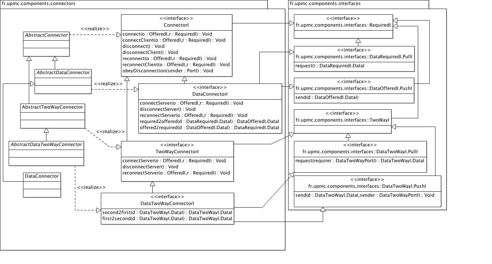

See: Description
| Interface | Description |
|---|---|
| ConnectorI |
The interface
ConnectorI is the generic interface for
connectors that mediate between requiring and offering components. |
| DataConnectorI |
The interface
BasicDataConnectorI is the generic interface for
connectors that mediate between requiring and offering components that
exchange data rather than calling services from each others. |
| DataTwoWayConnectorI |
The interface
DataTwoWayConnectorI is the generic interface for
connectors that mediate between requiring and offering components that
exchange data rather than calling services from each others, but using the
same interface on both sides and act as peers in the exchange. |
| TwoWayConnectorI |
The interface
TwoWayConnectorI is the generic interface for
connectors that mediate between components exposing two-way interfaces. |
| Class | Description |
|---|---|
| AbstractConnector |
The class
AbstractConnector partially implements an abstract
connector between two components by assuming that the offering component
implements the offered interface. |
| AbstractDataConnector |
The class
AbstractDataConnector partially implements a basic
data connector between components exchanging data rather than calling each
others services. |
| AbstractDataTwoWayConnector |
The class
AbstractDataTwoWayConnector partially implements a
basic data connector between components exchanging data in a peer to peer
way rather than calling each others services. |
| AbstractTwoWayConnector |
The class
AbstractTwoWayConnector partially implements a
basic connector between components calling each others services in a peer
to peer way rather than in a client-provider relationship. |
| ActiveDataConnector |
The class
ActiveBasicDataConnector partially implements an
active connector that can be used to connect qctive components in a
synchronised way, on a mix of active and passive components using a full or
partial pull mode. |
| ConnectionBuilder |
The class
ConnectionBuilder groups all the logic for the
interconnection of components, implementing location-transparency for
components by taking care care of identifying the possible cases (local
versus remote) and building the correct connection for each case. |
| DataConnector |
The class
DataConnector partially implements a basic data
connector where components call each others using plain Java method calls
only. |
| DataTwoWayConnector |
The class
DataTwoWayConnector implements a standard connector
for components exchanging data in a peer-to-peer mode using standard data
two-way interfaces. |
Hierarchy of connector objects to assemble components.
Connectors are used to make the bridge between two ports exposed by two components. Basically, a connector is linked to the two ports and relay the calls from the one to the other. Different types of connectors are proposed to match the different kinds of interfaces.
The most generic connector, which basic behaviours are declared in
ConnectorI and defined in AbstractConnector, connects
a client component CC exposing a required
interface R on a outbound port OP (calls go out of the component through this
port) to a server component SC exposing an offered interface O on an inbound
port IP. As such, the connector is assumed to implement the required interface
R (to receive calls from the client) and to call the server component on its
offered interface O. The interfaces being user-defined, a connector class
must be implemented to do so. The class AbstractConnector
provides for the connection logic used by the class
ConnectionBuilder that takes the two ports and the connector and
performs the connection per se.
Data connectors are used to connect client and server components that exchanges
data through data interfaces. As data interfaces may use standard pull and
push interfaces, a full implementation of a standard connector can be given.
The is the role of the class DataConnector.
Two-way connectors and data two-way connectors are similar to connectors and
data connectors respectively, but for two-way interfaces. Hence, a two-way
connector must be implemented as a subclass of the class
AbstractTwoWayConnector that will implement the user defined
two-way interface, while for data two-way connectors, a standard implementation
can be provided if the standard data two-way push and pull interfaces are used.
This is the role of the class DataTwoWayConnector.
Usage
Connectors are instantiated from standard connector classes of user-defined
and then connection is dynamically performed by calling the method
connectWith from the class ConnectionBuilder for which
a singleton object is created and stored in the static variable
ConnectionBuilder.SINGLETON. The connectWith method
takes three arguments : the inbound port (server-side), the outbound port
(client-side) and the connector. Hidden in the method code is the logic that
takes care of the different kinds of connection, e.g. local connection in the
same virtual machine if the two components are co-located, or a RMI connection
if the two components reside in different JVM. Hence, it provides the
location-transparency to the connection logic. A method
disconnectWith allows to properly disconnect previously connected
components.
Here is a UML class diagram of the package:
